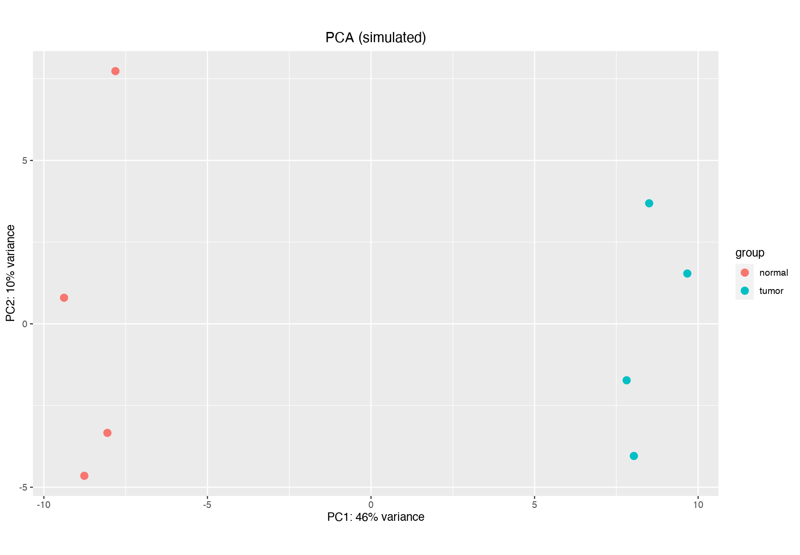
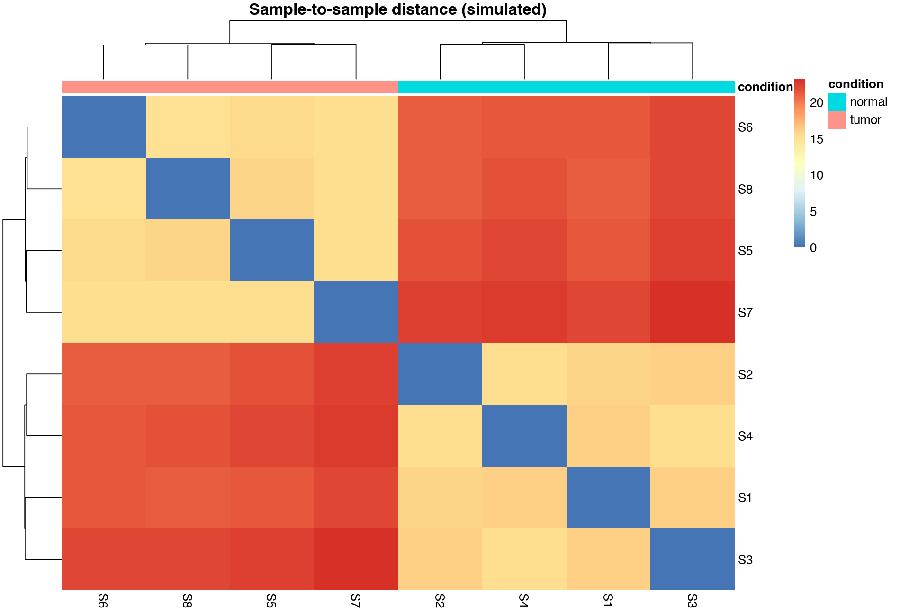
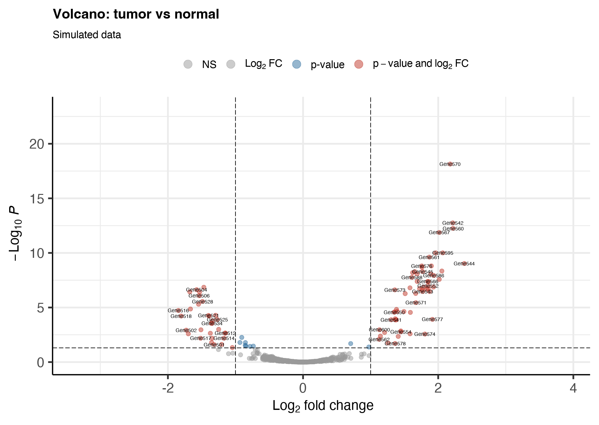
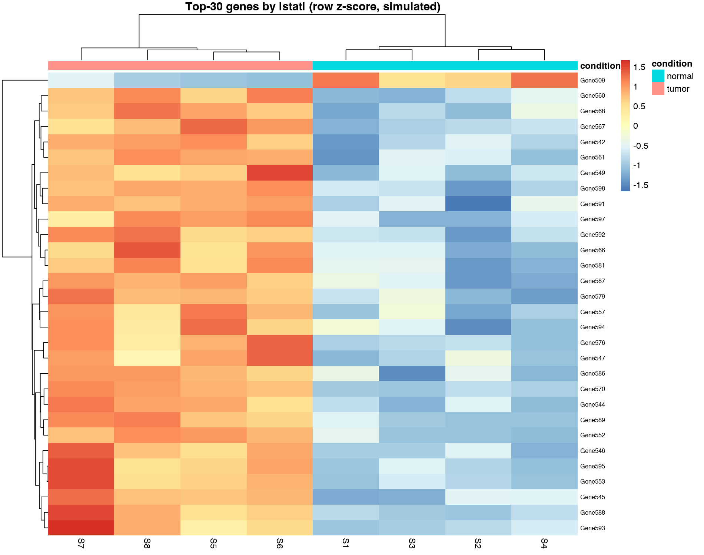

差异结果可视化：火山图、MA 图与热图
PCA、火山图、MA 图、热图的分工与代码：每张图回答什么问题、哪些坑要避开。
先画图，再看表
差异分析出表之后，第一件事不是挑基因，而是画四张图。图能在数字骗你之前，先把问题暴露出来：
| 图 | 回答的问题 | 工具 |
|---|---|---|
| PCA / 样本距离热图 | 分组成立吗？有没有批次与离群样本？ | DESeq2 plotPCA + pheatmap4 |
| MA 图 | log₂FC 估计有没有系统性偏移？ | plotMA() |
| 火山图 | 哪些基因显著、幅度多大？ | EnhancedVolcano2 |
| 热图 | 候选基因的样本间模式一致吗？ | pheatmap4（vst 数据） |
PCA 与样本距离：排错第一线
对 Count 做 variance stabilizing 变换1后画 PCA——注意 blind=FALSE 让变换利用已知的 design 信息；plotPCA 底层即 ggplot23，可继续用 ggplot 语法美化：
vsd <- vst(dds, blind = FALSE)
plotPCA(vsd, intgroup = c("condition", "batch")) # 按 分组+批次 上色
# 样本间距离热图：比 PCA 更全面的「谁像谁」
library(pheatmap)
sampleDists <- dist(t(assay(vsd)))
pheatmap(as.matrix(sampleDists), annotation_col = as.data.frame(colData(vsd)[, c("condition", "batch")]))
正常情况：同组样本聚在一起、PC1/PC2 与分组对应。若样本按批次而非分组聚类，先处理批次再谈差异（No.006）；个别样本孤立在角落，排查是否为离群样本。

火山图：一图看全显著基因
x 轴 log₂FC（建议用收缩后的值），y 轴 −log₁₀(padj)：EnhancedVolcano 一行出图，自动标注感兴趣的基因：
library(EnhancedVolcano)
res_df <- as.data.frame(resShrink)
res_df$SYMBOL <- mapIds(org.Mm.eg.db, rownames(res_df),
keytype = "ENSEMBL", column = "SYMBOL")
EnhancedVolcano(res_df,
lab = res_df$SYMBOL, x = "log2FoldChange", y = "padj",
pCutoff = 0.05, FCcutoff = 1,
title = "Tumor vs Normal", labSize = 3, pointSize = 2)
两个诚实提醒：① pCutoff 与 FCcutoff 是人为阈值，改参数会改变「显著基因」数量——报告里写明所用阈值；② 基因名标签宁少勿多，全标会糊成一团，只标统计学显著且生物学相关的候选（参见 No.022 的多维度判断）。
MA 图与热图
# MA 图：baseMean（x）vs log2FC（y），检查是否有系统性偏移
plotMA(resShrink, alpha = 0.05, main = "Tumor vs Normal")
# 热图：取 |stat| 最大的 30 个基因，行方向 z-score 标准化
top <- head(order(-abs(res_df$stat)), 30)
pheatmap(assay(vsd)[top, ],
scale = "row",
annotation_col = as.data.frame(colData(vsd)[, c("condition", "batch")]),
fontsize_row = 7, border_color = NA)热图 scale="row" 把每个基因在不同样本间的值转为 z 分数——颜色回答的是「这个基因在哪个样本里相对更高」，不是绝对表达量；想展示绝对水平应换用 TPM（参见 No.015）。合格的热图应该呈现「同一组样本颜色相近、组间条带分明」；若行方向被批次切成两半，先回去查批次。

图要为结论服务
四张图的分工：PCA/样本距离回答「数据可不可信」，MA 回答「估计有没有系统偏差」，火山图回答「哪些基因显著」，热图回答「候选基因的模式是否一致」。论文主图一般 PCA + 火山图 + 热图各一张，其余进补充材料。配色遵循 No.007（色盲安全、定性板不超过 8 组）。
延伸阅读与参考文献
- Love MI, Huber W, Anders S. Moderated estimation of fold change and dispersion for RNA-seq data with DESeq2. Genome Biology. 2014;15:550. doi:10.1186/s13059-014-0550-8
- EnhancedVolcano: publication-ready volcano plots. Bioconductor package.
bioconductor.org/packages/EnhancedVolcano - Wickham H. ggplot2: Elegant Graphics for Data Analysis. 2nd ed. Springer, 2016.
- Kolde R. pheatmap: Pretty Heatmaps. R package, CRAN.
cran.r-project.org/package=pheatmap